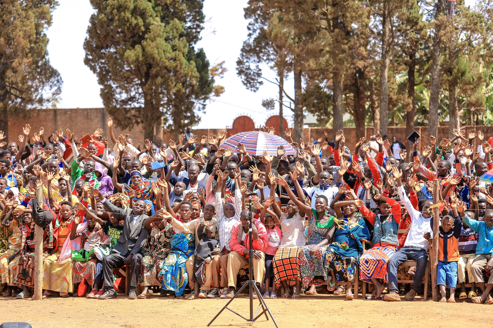

Mtumiaji anaongea
Anaandika au kuzungumza kwa lugha anayochagua.
LocalLang Tanzania AI inaleta tafsiri, mazungumzo na teknolojia ya lugha karibu na jamii za Tanzania.
Mfumo hupokea ujumbe, hutambua lugha na muktadha, huchakata taarifa, kisha hutoa jibu linaloeleweka.
Anaandika au kuzungumza kwa lugha anayochagua.
NLP hutambua maneno, muktadha na mahitaji ya mazungumzo.
Mfumo huunganisha lugha ya chanzo na lugha lengwa.
Mtumiaji hupata jibu kwa lugha na muktadha unaofaa.
Teknolojia inaweza kubadilika kulingana na mazingira ya mtumiaji.
Mawasiliano rahisi kati ya mhudumu wa afya na mgonjwa kwa lugha anayoielewa.
Maswali, maelezo na kujifunza kwa lugha inayomfikia mwanafunzi.
Taarifa na huduma za jamii kufikika kwa lugha mbalimbali.

Kukusanya, kuhifadhi na kutumia lugha za asili kwenye teknolojia.

Maswali ya afya na maelekezo yanaeleweka kwa mawasiliano ya sauti au maandishi.

Watu hushirikishana taarifa na maarifa kwa lugha wanayoifahamu.
Mawasiliano ya wateja, maagizo na huduma yanakuwa rahisi na ya haraka.

Uliza swali kwa kuandika au kuongea, kisha pata jibu lenye muktadha.
Mfumo unawezesha mawasiliano rahisi kulingana na mahitaji ya mtumiaji na mazingira yake.
Muundo umejengwa ukiweka lugha, sauti, tafsiri na uzoefu wa mtumiaji mbele.
Chagua lugha ya Tanzania na ubadilishe kichwa cha mfumo papo hapo.
Andika, ongea, rekodi na sikiliza majibu kwa uzoefu wa mawasiliano wa asili.
Afya, elimu, jamii na mazungumzo ya kawaida vinaweza kutenganishwa.
Inaweza kuunganishwa na FastAPI, database na model ya lugha ya mradi.
Msamiati, sentensi, tafsiri na metadata vinaweza kukusanywa kwa ajili ya training.
Muundo unaweza kuongezewa authentication, roles na ruhusa za API.
LocalLang Tanzania AI inalenga kupunguza kikwazo cha lugha katika afya, elimu, huduma za jamii, biashara, utafiti na uhifadhi wa lugha. Inasaidia watu kupata taarifa, huduma na fursa kwa lugha wanayoielewa, huku ikiimarisha ushirikiano na maendeleo ya jamii.